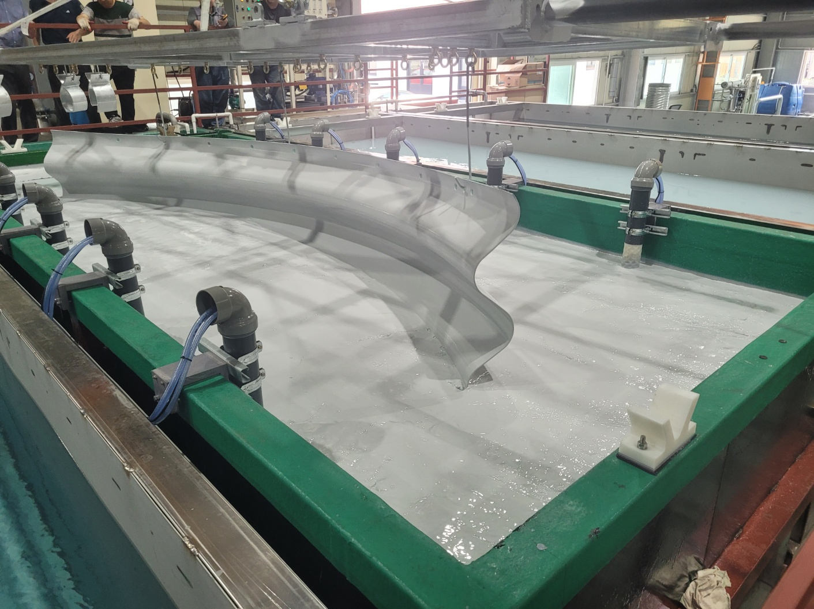
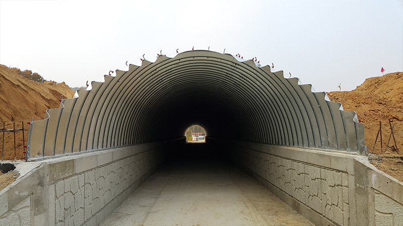
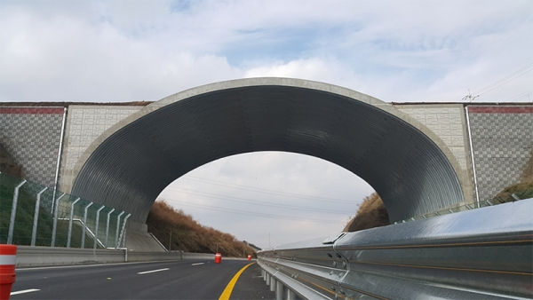

Koruge Çelik Plaka · Boru · Wonder Arch
REXSTEEL; yapısal tasarımdan üretim ve saha desteğine kadar altyapı ve koruyucu yapılar için koruge çelik çözümleri sunar.
Altyapıdan koruyucu yapılara
Saha koşullarına uygun koruge çelik mühendisliği.
Ürün, tasarım ve tedarik birlikte değerlendirilir.


Fonksiyonel elektroforetik boyama
Koruge Çelik Plaka
Elektrolitik dağlamadan zirkonyum ön işleme ve elektroforetik boyamaya: yapışma, aşınma ve hava koşullarına dayanımı deneylerle değerlendirilen yüzey koruması.
Sunumdaki numune ve deney koşulları için · Koşullar ve kaynaklar ayrıntı sayfasında

Sahada hayata geçen mühendislik
Ekolojik geçişler ve köprüler dâhil gerçek projelerdeki koruge çelik yapıları inceleyin.








Koruge çelik BIM,
CORRA ile bütünleşir.
Kendi geliştirdiğimiz CORRA BIM; 3B geometri, yapısal kontrol, çizim ve metrajı birleştirir. REX-CSP ise koruge çelik boru tasarım kontrollerini, hesap raporlarını ve tasarım aralığı tablolarını destekler.

İhtiyacınız olan dokümanlar
Ürün, belgelendirme ve mühendislik dokümanları tek yerde.
Bir sonraki projenizi
birlikte değerlendirelim.
Ürün · Tasarım · Tedarik · Saha desteği
E-posta ile iletişim →Rexsteel co.,ltd
344-4 Gwangjeong-ro, Haman-myeon, Haman-gun, Gyeongsangnam-do, Kore Cumhuriyeti
055.800.8901
info@rexsteel.kr
Wonder Arch teknik ve tedarik talepleri
Jinwoo Kim · Direktör
kpride78@rexsteel.kr
+82-10-3762-5144
Teklif için temel bilgileri paylaşın.
Tüm koşullar kesinleşmeden de bizimle iletişime geçebilirsiniz.
- Proje konumu ve kullanım amacı
- Açıklık / genişlik, yükseklik ve uzunluk veya boru çapı
- Bilinen örtü, yük ve zemin koşulları
- İstenen teslim tarihi, çizimler ve saha fotoğrafları